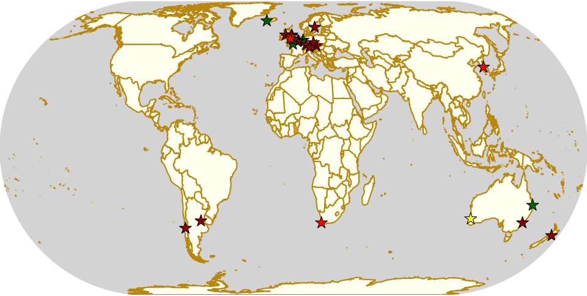
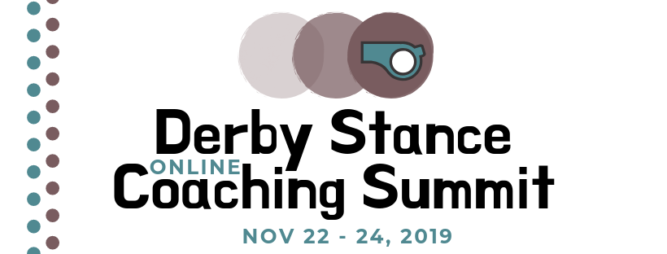

Weekend Highlights: 19 October 2019
This is a surprisingly really exceptionally busy weekend, so we're definitely going to split this update into two bits (and even then, we'll be unable to cover all the things deserving of highlights this Saturday.)
We're not even mentioning the Short Track Roller Derby events this weekend to save space - they're all in this roundup post if you want to catch up with them (although we've marked them on the map). They're all highlights, but this is a super busy weekend, so something has to give.
The 3rd fixture of the Chilean national tournament happens this weekend, as does the final of the New Zealand Top 10 Championshops 2019; as well as a number of large tournament events (perhaps the largest being in Sydney, Australia, and Lille, France). There's charity derby in Teesside, and even an international roller derby bootcamp up north in Iceland!
The rules are, as usual: highlights limited to 1 event per country, with an "extra" event allowed for a different kind of fixture (so, 1 tournament and 1 bootcamp), or if they involve Scottish leagues (since we are the Scottish Roller Derby Blog). Other notability might also allow the extra event - great posters, notable teams, etc. (League birthdays may count as "special" enough, at our discretion ;) )
We've bent the rules a bit this time, because it's important to highlight derby in regions which need more attention, and because it's quiet enough that we have the space.
In a bid to make this list as useful as possible, we've avoided links to Facebook except where noted. (Links to Teams are to non-Facebook resources - Instagram, or actual team pages - we'd strongly recommend that Teams get themselves an actual webpage [we can help host one if you need help]).
Locations are roughly organised East-West (with things before the weekend out sequence at the start).
Short Track Update October 2019
It's been a while since our last update on happenings with Rolla Skate Club's Short Track Roller Derby rules, so we thought it was overdue another post. There are exciting things to write about, across the world, as well, so we'll break this up region by region! Because of the prevalence of Facebook (and the fact that its Events are one of the few useful things about it), all links to events will be there; but we'll include enough info for you to get to the event without needing anything owned by Mark Zuckerberg. Where possible, we link to league websites, or to their Instagram when it isn't.
The Rollacon 2019 "All-Stars" bout teams photo. [Photo, rights: Rolla Skate Club]
Derby Stance 2019
For the past three years, Rule 56 have been helping to drive and develop coaching in Roller Derby; both in terms of coaching itself, and also resources for developing those coaches.
A very visible part of this has been their Derby Stance branded coaching community events; starting with a physical Coaching Summit back in 2016, and developing into a more extensive, and entirely virtual event in 2018 (2017 tested the concept with a series of individual webinars across the year). Holding the event online, with dedicated conference hosting services, was a response to the global nature of Roller Derby, and the global need for coaching resources and community; having to travel half-way across the world for a conference is not only expensive, but also wasteful.
The 2018 Derby Stance was extremely successful, with attendees describing it with terms like "mind-blowing" and "by far the most helpful coaching training I’ve received in five years"!
The Derby Stance Online Coaching Summit is returning for 2019, and Rule 56 have continued to build on and improve on what has been before. As the name suggests, this is, once more, a virtual-only event.
As with 2018's edition, individual "webinars" which make up the entire 3 day event, are separately bookable; you can buy tickets for just the sessions you're interested in. (If you're planning on attending a lot of the event, though, there's also whole-weekend tickets available, for a discount.). In a change from last year, these are organised into two types: "Seminars" (60 minute presentations, with time for questions) and "Workshops" (90 minute interactive sessions led by the session leader; these are limited to 20 attendees each). (Regular attendees of EROC, the European Roller derby Organisational Conference, will recognise this division from there, where it is pretty effective at supporting different kinds of interaction.)
But that's not all: just like a physical conference, the 2019 Derby Stance will have fringe and break-out events, organised as ad-hoc Facebook Live mini-streams. (Rule56 has already been trialing this with a series of "5 minutes with ..." events over the past year, and they work very well.)
Unlike most physical conferences, a benefit of the virtual nature is that all Seminars (but not Workshops) will be available after the fact as recordings if you miss them; and simultaneous automated real-time transcriptions will be available during each session, including translated into a range of languages, to aid inclusion and understanding. (For those who can't attend at all, "watch-later" tickets will also be available to access all the content purely post-hoc).
Photo credits: Nadia Kean and Jennifer B Gaskins (by Zakas Photography); Devoida Mercy (by Louise O'Rourke Photography); Furrocious (by No limit Lien); Dr. Astrid Coxon (by Martin Quadling); Squirrel Power (by Robin Dodd / Purple Turtle Photography); Miss Tea Maven (by David Dyte); Kaio-kensi (by Owen Clayton); all other photos uncredited.
Any Conference or Summit lives and dies by its roster of speakers, and this year's Derby Stance has a very exciting line-up:
- Smarty Pants (Strong Athletic)
- Is your Coaching actually working? (Workshop)
- Squirrel Power (Monterey Bay Derby Dames)
- Coaching Slower Learners
- Rosie Peacock (New Wheeled Order, Power of Scotland)
- Strategic Coaching
- Devoida Mercy (Philly Roller Derby)
- Bridging the Perception Gap about Coaching between Adults and Juniors (Seminar)
- Furrrocious (Amsterdam Roller Derby)
- How to structure feedback, and adjust to different training styles (Seminar)
- Structuring and building your training session (Workshop)
- Michelle Welton and Gie ‘uppercase’ Carr (Rose City Rollers)
- Coaching mixed-level practices in Adult and Junior programs (Seminar)
- Kaio-kensi (Montreal Roller Derby)
- Organic Drill Design - replicating real game scenarios in drills. (Seminar)
- Building a healthier brain safety culture (Seminar)
- Dr. Astrid Coxon (Suffolk Roller Derby)
- Coaching the 'un-coachable' (Workshop)
- Jennifer B Gaskins (New Jax City Rollers)
- How to coach when you don't have a coach (Seminar)
- Rita Giddens (Fort Myers Roller Derby)
- Coaching for a Positive Culture
- Miss Tea Maven (Gotham Girls Roller Derby)
- How to design optimal training plans for your Jammers. (Seminar)
- Processes and Steps to designing best Practice, including footage analysis. (Workshop)
In addition, Rule 56 will be chairing "Round Table" discussion sessions throughout the event, with topics decided dynamically as the Summit progresses; and the entire event will be introduced with a WFTDA Keynote Presentation the day before the Summit itself.
Tickets for both individual sessions, and the whole event, are on sale now . Advance sales for "watch later" tickets for Seminars are cheaper than they will be post-event; and remember that there are only 20 spots for each Workshop.
Derby Stance Online Coaching Summit 2019 will run from 22 November 2019 to 24 November 2019 (with the keynote on the 21st).
Derby Stance would like to thank: WFTDA, Roller Dirty Soaps and Steaks Contact Wear for committing to sponsor this event, and help develop coaching resources.
Weekend Highlights: 12 October 2019
This is a surprisingly busy weekend - apart from the MRDA Championship in Denver, there's the first ever bootcamp in Indonesia, hosted by Hot Lava Rollers and Derby Without Borders, the next fixture of the mysterious Derby Nights 4x4 tournament in Tokyo, the continuing Tasmanian Tournament, the next Suomi Cup and German Bundesliga fixtures... and more!
The rules are, as usual: highlights limited to 1 event per country, with an "extra" event allowed for a different kind of fixture (so, 1 tournament and 1 bootcamp), or if they involve Scottish leagues (since we are the Scottish Roller Derby Blog). Other notability might also allow the extra event - great posters, notable teams, etc. (League birthdays may count as "special" enough, at our discretion ;) )
We've bent the rules a bit this time, because it's important to highlight derby in regions which need more attention, and because it's quiet enough that we have the space.
In a bid to make this list as useful as possible, we've avoided links to Facebook except where noted. (Links to Teams are to non-Facebook resources - Instagram, or actual team pages - we'd strongly recommend that Teams get themselves an actual webpage [we can help host one if you need help]).
Locations are roughly organised East-West (with things before the weekend out sequence at the start).
Mea Culpa (29Sept)
Whilst we try to catch all the highlights for a weekend, sometimes some escape us. Facebook's event search tools are not good at finding events unless they're physically close to you; and they've disabled or limited most of the ways of reading lots of data from their site. Instagram doesn't provide any way to search for events at all; and not enough leagues have websites with rss feeds or calendars that we can pull from to make this reliable. (And, whilst most games get listed on Flat Track Stats, not all do; and not all events are bouts, or bouts which are suitable for ranking!)
We'd like to encourage leagues, again, to email us, or Facebook message us, or Instagram message us (or join our Discord server and talk to us there) to let us know about your events; or tell us how to (automatically) track your calendars if you have them!
We'd like to return to a few events we missed last weekend, though, just to restore the balance.
Firstly, in Uppsala, first fixtures of the Division 2 Swedish Nationals series for 2019/20 saw the hosts ( Jackdaw City Rollers ) compete in a round robin with Örebro's Nerike Knockouts and Sundsvall's Demolition Rollers, over 2 days.
The entire event was streamed on the Sweden-based Solidsport platform, and at the time of writing, "replays" [saved copies of the stream] are available at: https://solidsport.com/uppsala-roller-derby/replays although registration is required to view them.
| Team1 | Score1 | Score2 | Team2 |
|---|---|---|---|
| Uppsala | 350 | 63 | Örebro |
| Örebro | 130 | 252 | Sundsvall |
| Sundsvall | 100 | 186 | Uppsala |
The next Division 2 fixture is in the December, and sees Uppsala face Helsingborg's Helltown, the final member of the series; before the division completes in the new year for the final games.
The hosts of this event, Jackdaw City Rollers / Uppsala Roller Derby, are currently experiencing significant difficulties with their training venue, having had their practice times and halls abruptly curtailed at short notice. For more information, and to support them by signing a petition, go here: https://www.mittskifte.org/petitions/rattvisare-fordelning-av-halltider-i-uppsala
Over in Brazil, Capivaras Roller Derby (of Piracicaba) hosted a double header event with guests Gray City Rebels of São Paulo on Sunday. The Capivaras have been avoiding Facebook Events, so we missed this when it was just a flyer...
Action from Brazil (Photo: Gray City Rebels)
The Capivaras told us:
This Sunday’s (09/29) Match, which happened in Piracicaba, a city in the countryside of the state of São Paulo, was a friendly mixed match between two leagues: the home team, Capivaras Roller Derby, and the Gray City Rebels, from São Paulo, the state capital. A large part of the refereeing team was also from São Paulo. We held two mixed matches in order to provide the opportunities for all the skaters present. In the morning, we held a full-contact game with the debut of some players from the Grays and one from the Capivaras team, and in the afternoon a non-contact game with the return of some Capivara players to the track and the debut of some of the Grays' fresh meat! More than a great opportunity to put players in the track and train their abilities in the game; the matches were also an opportunity to make new friends and strengthen the full potential of the roller derby in Brazil!
Finally, a significant event which deserves more coverage, although being wholly-North-American, it's outside of our self-imposed limit on highlights...
Hawai'i saw their annual Battle of the Islands event last weekend. This year, the event was hosted by Pacific Roller Derby (O'ahu), with teams competing from Maui Roller Girls, Garden Isle Renegade Rollers (Kaua'i), and the "Big Island Mashup Team" (representing Echo City Knockouts and Waimea W ), as well as the hosts themselves.
Champions, Maui, versus hosts Pacific Roller Derby [Photo: Matt Radaker]
As well as the main tournament, run as a 4 team round robin, the event also featured a Junior Roller derby exhibition bout by the Honolulu LeiOuts, and a closing Black v White scrimmage. The Friday before the tournament additionally saw an Officiating Clinic, for all visiting officials (referees and NSOs), run by the very well travelled Mass The Ref.
The entire tournament was also livestreamed on YouTube, and we link to the video in each game in the table (none of these videos are full-length, as far as we can tell).
Scores were:
| Time | Team1 | Score1 | Score2 | Team2 | Video |
|---|---|---|---|---|---|
| 0900 Sat | Maui | 271 | 92 | GIRR | https://www.youtube.com/watch?v=dEe3Yj74eTU |
| 1100 | Big Island | 148 | 104 | Pacific | https://www.youtube.com/watch?v=szsRRbh4PQ8 |
| 1430 | Pacific | 148 | 149 | GIRR | https://www.youtube.com/watch?v=i3V3Qv5eR8Q |
| 1630 | Big Island | 79 | 161 | Maui | https://www.youtube.com/watch?v=vNK5RiUNAfE |
| 0900 Sun | Pacific | 99 | 142 | Maui | https://www.youtube.com/watch?v=8IPptzux4OE |
| 1100 | Big Island | 243 | 121 | GIRR | https://www.youtube.com/watch?v=2BHRhk-k4ME |
Making the undefeated Maui Roller Girls the Battle of the Islands Champions for 2019!
We hope to bring you a detailed article on the state of Roller Derby in Hawai'i later in the year.
Weekend Highlights: 05 October 2019
This is an exciting week for Scottish Roller Derby, with both Edinburgh's Auld Reekie, and Glasgow Roller Derby competing in international tournaments (ARRD in the Continental Cup in Helsinki, and GRD in the Kick Ass Cup in Hamburg). And, to add to that, this is the weekend of the annual Big Blether Scottish Roller Derby Conference, so all the leagues will be coming together there.
There's also two-day international tournaments in Sweden, the Mexican National Division 2 Championships in Léon, Sudestada Roller Derby's debut bout in Necochea, and more!
The rules are, as usual: highlights limited to 1 event per country, with an "extra" event allowed for a different kind of fixture (so, 1 tournament and 1 bootcamp), or if they involve Scottish leagues (since we are the Scottish Roller Derby Blog). Other notability might also allow the extra event - great posters, notable teams, etc. (League birthdays may count as "special" enough, at our discretion ;) )
We've bent the rules a bit this time, because it's important to highlight derby in regions which need more attention, and because it's quiet enough that we have the space.
In a bid to make this list as useful as possible, we've avoided links to Facebook except where noted. (Links to Teams are to non-Facebook resources - Instagram, or actual team pages - we'd strongly recommend that Teams get themselves an actual webpage [we can help host one if you need help]).
Locations are roughly organised East-West (with things before the weekend out sequence at the start).

Fenix Roller Derby recap an exciting year for Patagonia.
Ahead of FENIX Roller Derby hosting the next big Patagonian event, a 2 day bootcamp coached by 2x4 Roller Derby's Tropical Mecánica, we asked them to recap the exciting history of the Patagonian community's past year.
Antes de que FENIX Roller Derby organizara el próximo gran evento patagónico, un campamento de entrenamiento de 2 días dirigido por Tropical Mecánica de 2x4 Roller Derby, les pedimos que recapitularan la emocionante historia de la comunidad patagónica el año pasado.
En general es importante destacar que el Derby patagónico ha crecido muchísimo estos años gracias al trabajo fuerte que ponemos cada equipo. Me refiero a estos tipos de eventos donde podemos compartir en casa entrenamiento con una destacada jugadora del Team OSOM [del 2x4], invitando a los equipos que puedan sumarse a participar también, así ellos y nosotros nos capacitamos para seguir creciendo. En la provincia de Santa Cruz hay 4 equipos que vivimos a 400 km de distancia entre nosotros, por lo tanto jugar seguido es muy difícil porque implica mucho gasto económico. El año de Derby patagónico empezó con un torneo en Ushuaia que tuvo un excelente nivel y por suerte fénix roller Derby de fusionó con erráticas de Calafate en un equipo llamado cruz del sur y pudimos participar. Después tuvimos un bootcamp en caleta olivia una ciudad ubicada a 600 o 700 km de nuestro río Gallegos, pudimos participar también, finalizando el encuentro con un partido mixto.
En cuanto a actividad de nosotros fueron los únicos eventos a los cuales pudimos asistir. Para el año que viene tenemos proyectados más viajes para participar a nivel nacional en torneos grandes.
In general, it is important to highlight that Patagonian Derby has grown a lot in recent years thanks to the hard work that we put in from every team. I mean, these types of events where we can share bootcamps at home with an outstanding player from [2x4's] Team OSOM, inviting the teams that can Join to participate as well, so they and we are trained to continue growing. In the province of Santa Cruz, there are 4 teams that live 400 km away between us, therefore playing often is very difficult because it involves a lot of economic expense.
This year of Patagonian Derby began with a tournament in Ushuaia that had an excellent level and, luckily, Phoenix Roller Derby merged with Calafate's Erráticas in a team called "Cruz del Sur" and we were able to participate. Then, we had a bootcamp in Caleta Olivia, a city located 600 or 700 km from our Rio Gallegos where we could also participate, ending the match with a mixed match.
As for our activity, they were the only events we could attend. For next year we have more trips planned to participate nationally in large tournaments.
Weekend Highlights: 29 September 2019 (Sunday)
This is the Sunday (and Monday) addendum for the coming weekend.
We've also switched to a better map projection (Eckert IV) for this edition, to more accurately represent the scale of the countries and continents of the world.
The rules are, as usual: highlights limited to 1 event per country, with an "extra" event allowed for a different kind of fixture (so, 1 tournament and 1 bootcamp), or if they involve Scottish leagues (since we are the Scottish Roller Derby Blog). Other notability might also allow the extra event - great posters, notable teams, etc. (League birthdays may count as "special" enough, at our discretion ;) )
We've bent the rules a bit this time, because it's important to highlight derby in regions which need more attention, and because it's quiet enough that we have the space.
In a bid to make this list as useful as possible, we've avoided links to Facebook except where noted. (Links to Teams are to non-Facebook resources - Instagram, or actual team pages - we'd strongly recommend that Teams get themselves an actual webpage [we can help host one if you need help]).
Locations are roughly organised East-West (with things before the weekend out sequence at the start).

Weekend Highlights: 28 September 2019
This is another really busy weekend, but weirdly less so in Latin America on Saturday [edit: this turned out to be just that the events were harder to find]. We have two 10th birthdays of leagues, several bootcamps and tournaments (including possibly our favourite one, the Hot Chilli Cup - providing both Junior derby bootcamp and tournament in Australia), and a bunch of exciting derby in Argentina. As there are so many deserving events, we'll be having an addendum to cover significant things in the Sunday-Monday period later in the week.
We've also switched to a better map projection (Eckert IV) for this edition, to more accurately represent the scale of the countries and continents of the world.
The rules are, as usual: highlights limited to 1 event per country, with an "extra" event allowed for a different kind of fixture (so, 1 tournament and 1 bootcamp), or if they involve Scottish leagues (since we are the Scottish Roller Derby Blog). Other notability might also allow the extra event - great posters, notable teams, etc. (League birthdays may count as "special" enough, at our discretion ;) )
We've bent the rules a bit this time, because it's important to highlight derby in regions which need more attention, and because it's quiet enough that we have the space.
In a bid to make this list as useful as possible, we've avoided links to Facebook except where noted. (Links to Teams are to non-Facebook resources - Instagram, or actual team pages - we'd strongly recommend that Teams get themselves an actual webpage [we can help host one if you need help]).
Locations are roughly organised East-West (with things before the weekend out sequence at the start).

UKRDA needs you
It's time for another guest post, as the UK's National Governing Body for Roller Derby, the UKRDA, have a message.
Roller Derby has changed a lot since the revival in 2001; with age, and with the changing of the wider cultures in which it’s embedded, it's grown, shrunk, formalised, organised, reorganised, liberated and moderated in various ways in various places. We’ve gone from being some friends who skate together and have fun to being a sport with World Cups and World Championships, leagues on six continents and a growing Junior reach (all whilst still having fun).

The UKRDA, like all of the Roller Derby “National Governing Bodies” has been part of that journey, but the role of National Governing Bodies hasn’t always been clear in our new and rapidly evolving sport.
Back in 2007, the group that would become UKRDA was nothing more than a Yahoo groups discussion board (some readers may not even remember that Yahoo ran such a service!); a place for the fifteen active leagues to coordinate, share advice, and work together to see how this Roller Derby thing could happen. Two years later, it had gone formal: naming itself the “United Kingdom Roller Derby Association”, to provide a democratic body that could represent the sport to all those structures that need an “organisation” to talk to. Slowly, as Roller Derby in the UK has grown, the UKRDA has evolved, taking on more responsibilities. (To name a few: overseeing National Teams for the World Cups; supporting the development of British Championships; negotiating in a position of collective strength for insurance for leagues; managing grievances and complaints; upholding codes of conduct; standing up for leagues when they need support; supporting officials in development and training; and representing the sport to National and International media.)
In the past month, it has taken another step, joining the German and Finnish NGBs in formalising a deeper relationship with the WFTDA. This collaboration may look like a simple letter, but the significance is so much more. In the face of other organisations, such as World Skate, who want to be seen as the leaders of roller derby, we say no. We acknowledge that this sport, our sport, is run by those that make it; the officials, the volunteers and the skaters. For this to continue to be the case, we have to put these procedures and agreements in place. These are important foundations, we're building a platform of NGBs working together with our global governing bodies - it's giving NGBs a clear voice in the future of our sport.
Despite these significant changes and developments, the UKRDA continues to be a small team of volunteers. These volunteers are elected by member leagues and are governed by votes of those leagues. At times the UKRDA has been perceived as a "faceless bureaucracy", but in its simplest form, it is a group of volunteers who care deeply about the progression and development of Roller Derby. Our names are available on our website, we're real people who skate, volunteer and officiate at leagues across the UK. However, in the past year, online abuse and pressure have made the job even harder for this band of volunteers. We’ve heard more from people sending us abuse, than those wanting to get involved.
It’s a crucial time for UK roller derby. The last 6 months, (or even 7 days!) have proved the value of clear, agreed on policies available for leagues as well as the importance of grievance and escalation processes. But we can’t do this alone.
We have big plans. But we need more people to come on board to see these plans through. One of the priority projects for the UKRDA is to seek recognition from the Sports Councils across the UK as an NGB in our right - we can tap into structures, advice, support and potentially funding. We also need to review our grievance process to help ensure safe spaces. We want to foster the development and learning of officials through boot camps. We want to develop a UK wide safeguarding policy for roller derby that leagues can implement.
We need you to get involved.
There is only so much a few people can do. You have the expertise of your sport, your leagues, your local areas. We need you to help us make all of these structures better, to support our sport and the people within it as well as we should. We're here being open and honest; the culture and actions towards URKDA need to change, and we need to change - this is where we need you.
Nominations for people to join the board of the UKRDA are open now. Without you, this won’t happen. We are only as strong as our member leagues and our volunteers.
We have an Extraordinary General Meeting on October 3rd - if your league is a member we want you to be there. All of us make up the UKRDA, but more of us need to get involved.
The UK roller derby scene is amazing. We are writing this while at British Championships playoffs, at the end of the first day when we have seen the level of commitment and skill from leagues that ten years ago would have been visible at a WFTDA D1 team. The athleticism, the energy, the passion is there. We're so proud to be a part of this incredible sport, and we hope this has given you an insight into our commitment to its development, and that we have heard what our members want. This is a step towards achieving that.
The UKRDA Website is: https://ukrda.org.uk
If you are interested in being part of the UKRDA Board, please send a statement of interest to directors.ukrda@gmail.com, covering what skills, experience or enthusiasm you would bring to the UKRDA - as well as your name and league affiliation (if any) by midnight on Wed 25th Sept. You do not have to be a member of a league to apply.
Any and all questions can be addressed to UKRDA via the above email, or via messages on any of their social media accounts. [ FACEBOOK ][ INSTAGRAM ][ TWITTER ]